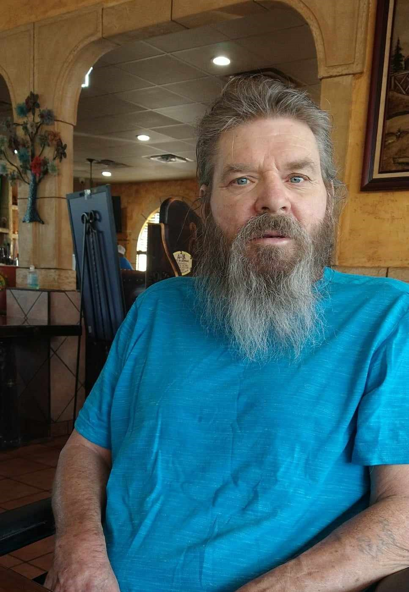

Ron at his favorite mexican restuarant
Ron at his favorite mexican restuarant
Timeline
| 1954 | Born in Alexandria, Virginia on September 10th |
| 1971 | Joins United States Army at age of 17 |
| 1973 | Ends military journey at age of 19 |
| 1980 | Meets and goes on first date with future wife Lisa Jean Henningsen |
| 1981 | First son Ronald Gerald Huston-Henningsen is born on June 29th |
| 1987 | Marries wife of 36 years Lisa Henningsen on January 2nd |
| 1988 | First daughter Constance Jean Huston is born on January 7th |
| 1991 | Second son William Arthur Huston is born on April 16th |
| 1995 | Second daughter Lillian Anita Huston is born on December 6th |
| 2002 | Injures self on job and becomes stay at home dad. Begins his own business called The Restoration Wizard |
| 2004-2007 | Restores old vehicles as hobby |
| 2005 | Adopts furbaby Alize |
| 2006 | Adopts furbaby Porkey |
| 2008 | Moves to Texas |
| 2008-2020 | Begins woodworking and chime-making as hobbies |
| 2016 | Accepts Jesus Christ as his Lord and Savoir in January |
| 2016 | Baptized on February 14th |
| 2020 | Becomes ill |
| 2023 | Dies at the age of 68, surrounded by loving family members |
Ron and Lisa